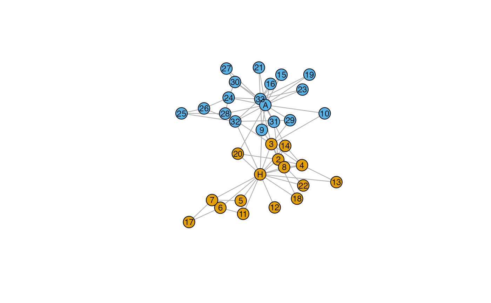
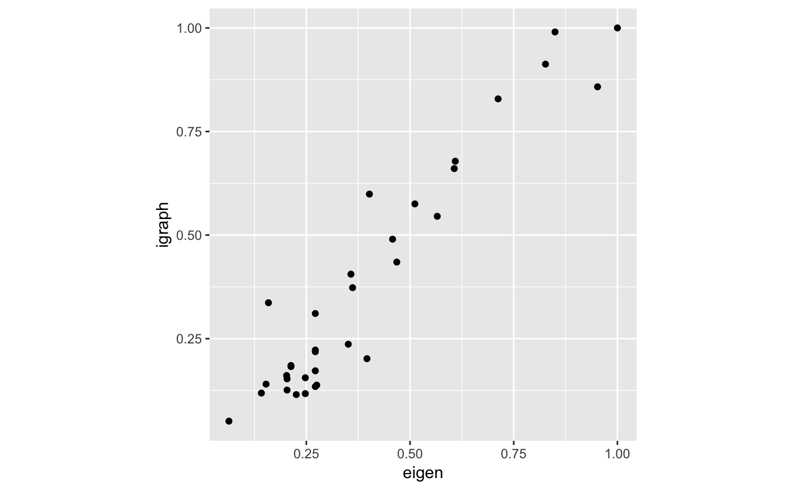
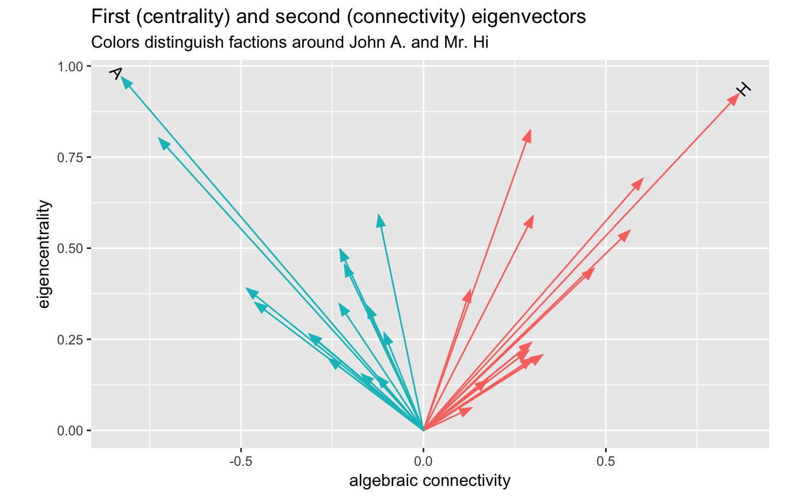
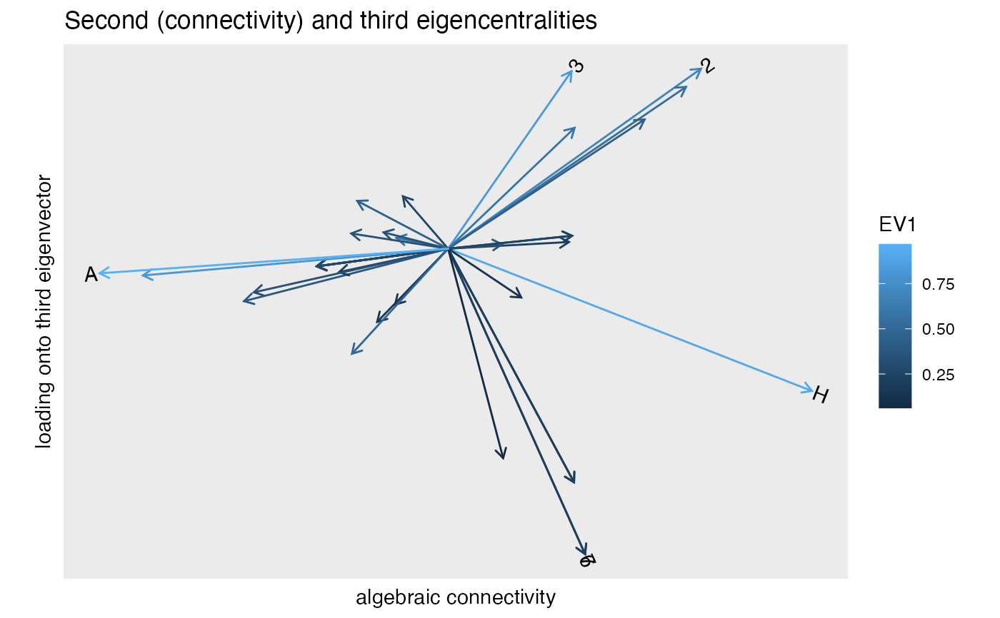

methods-eigen.RdThese methods extract data from, and attribute new data to,
objects of class "eigen" returned by eigen_ord().
# S3 method for eigen as_tbl_ord(x) # S3 method for eigen reconstruct(x) # S3 method for eigen recover_u(x) # S3 method for eigen recover_v(x) # S3 method for eigen recover_inertia(x) # S3 method for eigen recover_coord(x) # S3 method for eigen recover_conference(x) # S3 method for eigen augmentation_u(x) # S3 method for eigen augmentation_v(x) # S3 method for eigen augmentation_coord(x)
| x | An ordination object. |
|---|
# Graph Laplacian eigenvectors for spectral partitioning data(karate, package = "igraphdata") igraph::plot.igraph( karate, vertex.label.family = "sans", vertex.label.color = "black", vertex.label.cex = .75 )# first eigenvector (centrality) karate_eigen_cent <- igraph::eigen_centrality(karate) # eigendecomposition karate %>% igraph::as_adjacency_matrix(sparse = FALSE) %>% eigen_ord() %>% as_tbl_ord() %>% mutate_u( faction = igraph::vertex_attr(karate, "Faction"), name = igraph::vertex_attr(karate, "name"), label = igraph::vertex_attr(karate, "label") ) %>% print() -> karate_eigen#> # A tbl_ord of class 'eigen': (34 x 15) x (34 x 15)' #> # 15 coordinates: EV1, EV2, ..., EV15 #> # #> # U: [ 34 x 15 | 3 ] #> EV1 EV2 EV3 ... | faction name label #> | <dbl> <chr> <chr> #> 1 0.922 0.863 -0.338 | 1 1 Mr Hi H #> 2 0.690 0.600 0.427 ... | 2 1 Actor 2 2 #> 3 0.823 0.293 0.421 | 3 1 Actor 3 3 #> 4 0.548 0.564 0.384 | 4 1 Actor 4 4 #> 5 0.197 0.299 -0.555 | 5 1 Actor 5 5 #> # … with 29 more rows #> # #> # V: [ 34 x 15 | 0 ] #> EV1 EV2 EV3 ... | #> | #> 1 0.922 0.863 -0.338 | #> 2 0.690 0.600 0.427 ... | #> 3 0.823 0.293 0.421 | #> 4 0.548 0.564 0.384 | #> 5 0.197 0.299 -0.555 | #># corroborate eigencentralities tibble::tibble( igraph = karate_eigen_cent$vector, eigen = karate_eigen$vectors[, 1] / max(karate_eigen$vectors[, 1]) ) %>% ggplot(aes(x = eigen, y = igraph)) + coord_equal() + geom_point()# first and second eigenvectors for centrality and connectivity / partitioning karate_eigen %>% ggbiplot(aes(x = 2, y = 1)) + geom_u_vector(aes(color = as.factor(faction))) + geom_u_text_radiate(aes(label = ifelse(grepl("H|A", label), label, NA))) + guides(color = FALSE) + labs(x = "algebraic connectivity", y = "eigencentrality") + ggtitle( "First (centrality) and second (connectivity) eigenvectors", "Colors distinguish factions around John A. and Mr. Hi" )#> Warning: Removed 32 rows containing missing values (geom_text_radiate).# second and third eigenvectors karate_eigen %>% ggbiplot(aes(x = 2, y = 3)) + scale_x_continuous(expand = expand_scale(mult = .3)) + scale_y_continuous(expand = expand_scale(mult = .2)) + geom_u_vector(aes(color = EV1)) + geom_u_text_radiate(stat = "chull", aes(label = label)) + labs(x = "algebraic connectivity", y = "loading onto third eigenvector") + ggtitle( "Second (horizontal) and third (vertical) eigencentralities", "Color increases in value with eigencentrality, labels along convex hull" )